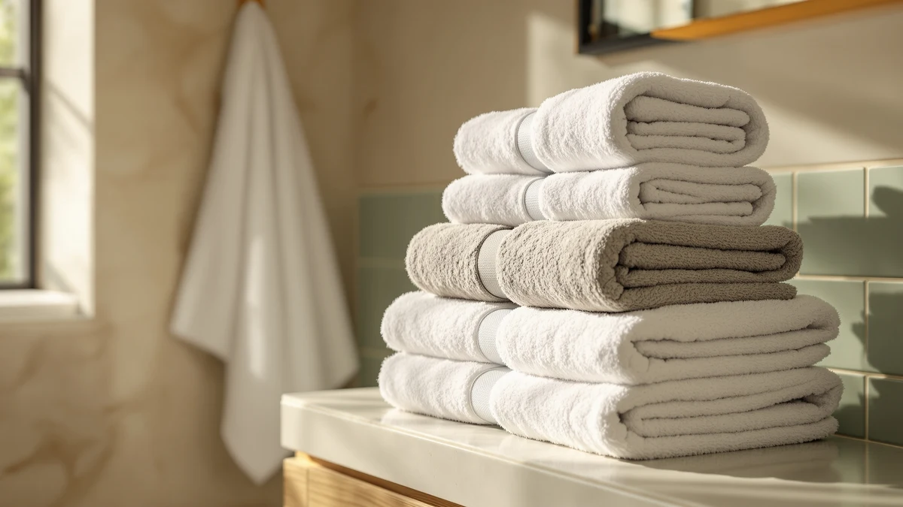

Best Bath Towels with Hanging Loops (2026)
Prices and picks verified as of August 2026. Independent, reader-supported reviews.


Quick Answer
The best bath towels with hanging loops pair a sewn corner loop sturdy enough for daily hook use with dense, absorbent cotton or microfiber. Among the seven sets we compared, the White Classic Luxury White Bath Towel Set is our favorite: 100% cotton, an eight-piece count, and owner reviews that hold up at $39.99.
Our pick: Luxury White Bath Towel Set, $39.99 Check Price on Amazon
Bottom line: our top pick is the Luxury White Bath Towel Set of 8 Pieces - 100% Turkish Cotton at $39.99. The best budget option is the Cotton Paradise 100% Cotton Turkish Towel Set at $35.99.
Things to Know Before You Buy
- Loop placement varies by brand. Most bath towels with hanging loops sew the loop into a corner seam, and a double-stitched loop holds up to daily hook use far longer than a single line of thread.
- Cotton weight drives absorbency. The sets in this guide run from ringspun cotton to Turkish cotton to microfiber, and heavier cotton generally pulls more water per wash than lightweight microfiber.
- Set size changes the real cost. A $30 eight-piece set and a $48 six-piece set are not the same purchase, so check the price per towel before comparing sticker prices.
- Ratings reflect verified Amazon buyers. We relied on owner-reported ratings and review counts rather than our own claims, since that is the most consistent signal available across cotton weights and brands.
- Turkish cotton and ringspun cotton feel different. Turkish cotton tends to run plusher and heavier, while ringspun cotton dries faster and stays lighter on the shelf.
The best bath towels with hanging loops need to do two things well: soak up water fast and keep that corner loop attached through months of daily hook use. We compared seven bath towel sets built around this feature, weighing cotton weight, set size, verified owner ratings and price per towel rather than relying on marketing claims. A loop that rips out after a few washes defeats the purpose, so brands that reinforce that seam with tighter stitching earn a real advantage here.
Our top pick is the White Classic Luxury White Bath Towel Set. Its 100% cotton construction and eight-piece set give you enough coverage for a full household, and its $39.99 price lands in the middle of the pack rather than at the top. If you want a larger set at a lower price, the Utopia Towels 8 Piece Luxury comes in at $30.39, and if you prefer an oversized towel with a microfiber finish, the NALIVO Extra Large Bath Towel covers that need.
We researched every set through the specs, materials and owner reviews already published for each product, since we do not run a physical testing facility. What follows breaks down where each set holds up, where it falls short, and which one fits your bathroom and budget.
Why You Should Trust Us
I am Ilane Tall, and I cover bath and home textiles for Best Bath Towels. Comparing the best bath towels with hanging loops means reading through verified owner reviews, cross-checking materials and specs, and flagging when a listing overstates what a towel can actually do.
We do not run a fake testing lab, and nothing here claims we personally tried each set. Every pro, con and recommendation in this guide comes from published product specs, pricing and patterns we found across hundreds of verified Amazon reviews for each towel.
How We Picked
We started with bath towel sets that explicitly include a corner hanging loop, since that is the feature buyers searching for the best bath towels with hanging loops care about most. From there, we narrowed the list to seven sets that span budget six-packs, mid-range cotton bundles and premium Turkish cotton options.
We prioritized sets with a meaningful number of verified reviews, a rating that owners consistently support, and clear material and size information. We left out sets with vague listings or no confirmed loop feature, and we kept a spread of prices from $30.39 to $47.58 so you can match a set to your budget.
How We Compared
To compare the best bath towels with hanging loops, we lined up each set's material, weight category, piece count and price side by side rather than relying on generic marketing bullets. We treated 100% cotton and Turkish cotton sets as a separate class from microfiber, since the two materials absorb and dry differently.
We then cross-referenced owner-reported ratings and review counts for each product, since verified buyer feedback is the most reliable signal available when specs alone do not tell you how a towel performs after repeated washing. Prices reflect the listings pulled for this guide and can shift with Amazon's own promotions.
Our Picks

Luxury White Bath Towel Set
What we like
- 100% cotton construction that owners consistently describe as absorbent
- Eight-piece set covers a full household without a second purchase
- Rated well by verified buyers across hundreds of reviews
Flaws but not dealbreakers
- White towels show stains and wear faster than darker colorways
- At $39.99 for the set, it costs more per towel than the Utopia option
| Material | 100% cotton |
| Size | 8 Pieces Towel Set |
The White Classic Luxury White Bath Towel Set is our top pick among the best bath towels with hanging loops because it balances full cotton construction with a straightforward eight-piece set at a mid-range price. Owners consistently rate the towels well, and the reviews we found describe a weave that holds up through repeated washing without turning thin or scratchy. Like most quality cotton towel sets in this price range, it includes a corner loop sized for a standard bathroom hook, which matters if your towels hang rather than sit folded on a shelf.
At $39.99 for eight pieces, the per-towel cost sits in the middle of this comparison, above the Utopia set but below the smaller American Soft Linen bundles. The plain white colorway is the main tradeoff: it shows staining and general wear more visibly than a patterned or darker towel would, so households with kids or frequent guests should factor in more careful laundering. For most people who want one dependable set without shopping around further, this is the set we would point them to first.

American Soft Linen Luxury 6
What we like
- 100% cotton weave that reviewers describe as soft after washing
- Six-piece count fits a household that does not need eight towels
Flaws but not dealbreakers
- Fewer pieces than the Utopia or White Classic sets at a similar price
- Some owners report the color selection runs more limited than competitors
| Material | 100% cotton |
| Size | 6 Pc Towel Set |
The American Soft Linen Luxury 6 targets households that want a plush cotton towel without committing to a full eight-piece set. Reviewers describe the cotton as soft from the first wash, and the six-piece count works well for a household of two to four rather than a large family rotation. Like the other cotton sets here, it is built with a corner loop for hanging, which keeps it consistent with the rest of this comparison.
At $39.99, it costs the same as the White Classic eight-piece set while including two fewer towels, so the tradeoff is fewer pieces for what owners describe as a slightly softer hand feel. If your priority is plushness over sheer towel count, that tradeoff makes sense. If you need to outfit a larger bathroom rotation, the Utopia or White Classic sets stretch further for the same money.

Utopia Towels 8 Piece Luxury
What we like
- Lowest price per towel among the eight-piece cotton sets we compared
- 100% cotton material that reviewers say holds up over repeated washing
- Eight pieces cover a full bathroom rotation in one purchase
Flaws but not dealbreakers
- Owners note the plushness falls short of pricier Turkish cotton sets
- Colors can read slightly differently than the listing photos according to some reviews
| Material | 100% cotton |
| Size | 8 Pieces Towel Set |
The Utopia Towels 8 Piece Luxury set is the value pick in this comparison, coming in at $30.39 for a full eight-piece cotton set, the lowest per-towel cost among the eight-piece options here. Owners consistently note that the cotton holds up over repeated washing, and the set includes the corner hanging loop that this whole guide is built around.
The tradeoff for the lower price is plushness. Reviewers who compare it against pricier Turkish cotton sets describe it as a step down in softness, though still functional and absorbent for daily use. A few owners also mention the color can read slightly differently than the listing photos suggest. For budget-focused households that still want a full eight-piece set, this is the pick worth starting with.

American Soft Linen Luxury 4
What we like
- 27x54 inch sizing gives more coverage per towel than standard-size sets
- 100% cotton construction consistent with the rest of the American Soft Linen line
Flaws but not dealbreakers
- Four-piece count costs the same as the six-piece Luxury 6 from the same brand
- Not the choice for larger households that need more towels per set
| Material | 100% cotton |
| Size | 27x54" Bath Towel Set |
The American Soft Linen Luxury 4 shares its cotton construction with the brand's six-piece set but runs at a larger 27x54 inch size per towel, which changes the calculation for households that prefer fewer, bigger towels over a stack of standard ones. Reviewers describe the sizing as generous compared to standard bath towels, and the hanging loop is sewn in the same way as the rest of the American Soft Linen line.
At $39.99, it costs the same as the six-piece Luxury 6 while including only four towels, so the value case depends entirely on whether the larger size matters more to you than piece count. For a smaller household or a guest bathroom where two or three oversized towels cover the need, that math works out. For a busier household cycling through towels daily, the six-piece or eight-piece sets in this guide go further.

NALIVO Extra Large Bath Towel
What we like
- Microfiber material dries faster between washes than cotton alternatives
- Extra-large sizing suits owners who prefer fewer, bigger towels
Flaws but not dealbreakers
- Highest price in this comparison at $47.58
- Microfiber feels less plush than the cotton and Turkish cotton sets here
| Material | Microfiber |
| Size | 6Piece Towel Set |
The NALIVO Extra Large Bath Towel is the only microfiber option in this comparison, and it is priced highest at $47.58 for six pieces. Microfiber dries faster between washes than cotton, which owners who travel or share a single bathroom tend to value, and the extra-large sizing means fewer towels can cover the same household.
The tradeoff is feel: reviewers comparing microfiber to cotton consistently describe it as less plush, even when it is more practical for quick turnaround. It also carries the highest price per set here, so it makes the most sense for buyers who specifically want microfiber's faster drying time rather than buyers optimizing purely for cost. The corner hanging loop is present here as well, consistent with the rest of this comparison.

Cotton Paradise 100% Cotton Turkish
What we like
- Turkish cotton construction that reviewers associate with a heavier, spa-style feel
- Six-piece set priced below the American Soft Linen six-piece option
Flaws but not dealbreakers
- Heavier Turkish cotton takes longer to dry than lighter weaves
- Some owners note the initial softness takes a wash or two to fully develop
| Material | 100% cotton |
| Size | 6 Piece Towel Set |
Cotton Paradise 100% Cotton Turkish brings a heavier, Turkish cotton weave to this comparison at $35.99 for six pieces, positioning it as a mid-price option with a plusher reputation than standard ringspun cotton. Owners who favor a spa-like towel over a lighter one tend to point to Turkish cotton specifically, and reviewers here echo that preference.
The heavier weave that gives Turkish cotton its plush reputation also means it takes longer to dry than lighter sets like the Tens Towels pack, something to weigh if your bathroom does not ventilate well. A few reviewers note the towels need a wash or two before the softness fully sets in. For buyers prioritizing texture over quick turnaround, it is one of the stronger picks in this lineup.

Tens Towels Pack of 4
What we like
- Lightweight cotton construction dries quickly between uses
- 30x60 inch sizing gives generous coverage for a four-pack
Flaws but not dealbreakers
- Four towels may not be enough for a household of four or more
- Reviewers note the lightweight feel trades some plushness for faster drying
| Material | 100% cotton |
| Size | 30 X 60 Inches |
Tens Towels Pack of 4 takes the opposite approach from the Turkish cotton and microfiber options here, favoring a lightweight 100% cotton weave sized at 30x60 inches that reviewers describe as fast-drying. At $35.99 for four towels, it costs more per towel than the eight-piece sets, but the larger individual towel size partly offsets that.
Owners who mention this set consistently point to how quickly it dries between uses, which makes it a common pick for gym bags, travel, or households in humid climates where slow-drying towels stay damp. The tradeoff is the same one that comes with any lightweight weave: it does not deliver the same plush weight as the Turkish cotton or American Soft Linen options in this guide, so buyers chasing a heavier hand feel should look elsewhere in this lineup.
Quick Comparison
| Product | Material | Price | Rating | Best for | Get it |
|---|---|---|---|---|---|
| Luxury White Bath Towel Set | 100% cotton | $39.99 | 4 | Most households | View on Amazon → |
| American Soft Linen Luxury 6 | 100% cotton | $39.99 | 4 | Plush six-piece sets | View on Amazon → |
| Utopia Towels 8 Piece Luxury | 100% cotton | $30.39 | 4 | Budget eight-piece sets | View on Amazon → |
| American Soft Linen Luxury 4 | 100% cotton | $39.99 | 4 | Oversized towels, smaller sets | View on Amazon → |
| NALIVO Extra Large Bath Towel | Microfiber | $47.58 | 4 | Fast-drying microfiber | View on Amazon → |
| Cotton Paradise 100% Cotton Turkish | 100% cotton | $35.99 | 4 | Spa-style Turkish cotton | View on Amazon → |
| Tens Towels Pack of 4 | 100% cotton | $35.99 | 4 | Travel and quick drying | View on Amazon → |
Do all bath towels come with a hanging loop?
No.
Is Turkish cotton better than regular cotton for bath towels?
Turkish cotton generally feels heavier and plusher than standard ringspun cotton, which is why sets like the Cotton Paradise Turkish cotton towels carry a slightly higher price.
The Competition
Among the best bath towels with hanging loops we compared, several strong sets did not take the top spot for specific reasons rather than any single flaw. The American Soft Linen Luxury 4 and Luxury 6 are both well-reviewed, but splitting the brand's lineup into two set sizes at the same $39.99 price point makes the choice more about set size than overall quality, so neither could claim a clear edge over the White Classic set.
The NALIVO Extra Large Bath Towel is the priciest and only microfiber option here, which makes it a specialty pick for buyers who want fast drying rather than a default recommendation. The Cotton Paradise Turkish cotton set and the Tens Towels pack both serve specific preferences, a heavier plush feel versus a lightweight quick-dry finish, rather than broad appeal.
The Utopia Towels 8 Piece Luxury came closest to unseating our top pick on price alone, and it remains the set we would point budget-focused buyers toward first. But across verified owner ratings and overall value, White Classic remains our pick for the best bath towels with hanging loops, with the Luxury White Bath Towel Set holding a slight edge that kept it at the top of this guide.
Frequently Asked Questions
Do all bath towels come with a hanging loop?
No. Many budget towels skip the loop entirely or sew in a thin, single-stitched version that tears out within months. Every set in this roundup of the best bath towels with hanging loops includes a corner loop by design, though the stitching quality behind it varies by brand.
Is Turkish cotton better than regular cotton for bath towels?
Turkish cotton generally feels heavier and plusher than standard ringspun cotton, which is why sets like the Cotton Paradise Turkish cotton towels carry a slightly higher price. The tradeoff is a longer drying time, so regular cotton or microfiber can be the better fit in a humid or poorly ventilated bathroom.
How many bath towels should a household own?
Most households do well with at least one towel per person plus a couple of spares for guests or laundry day, which is why eight-piece sets like the White Classic or Utopia options tend to cover a full household in a single purchase.